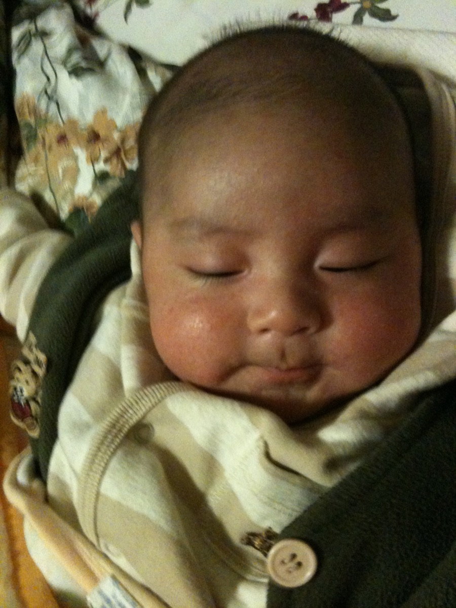
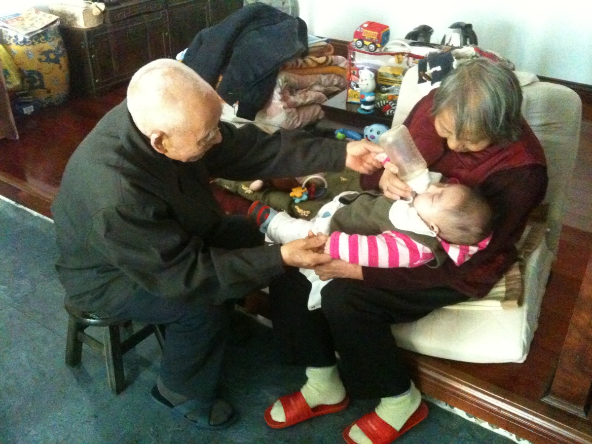
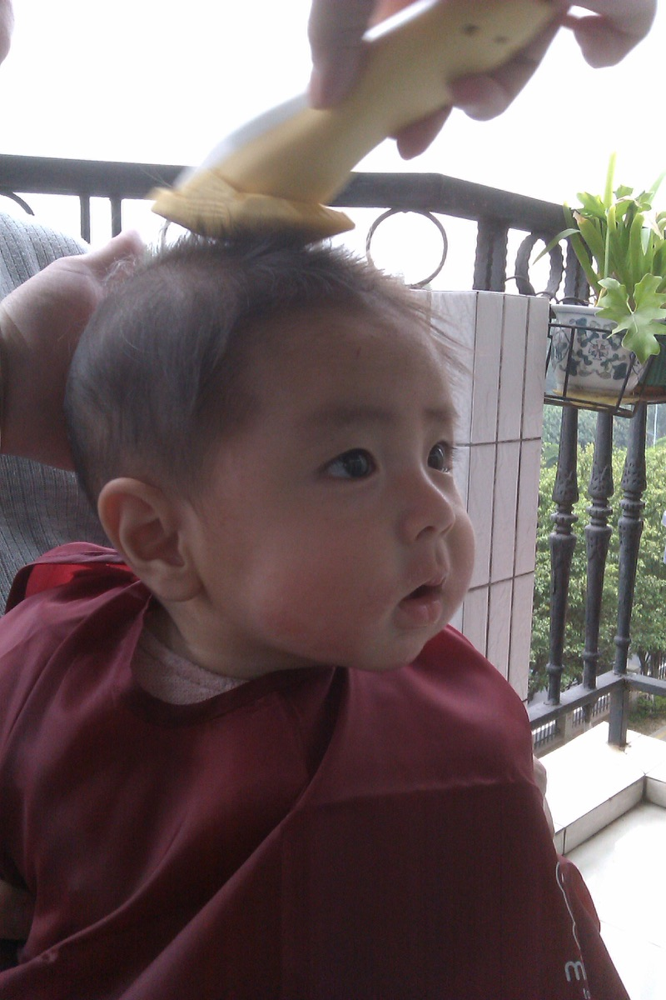
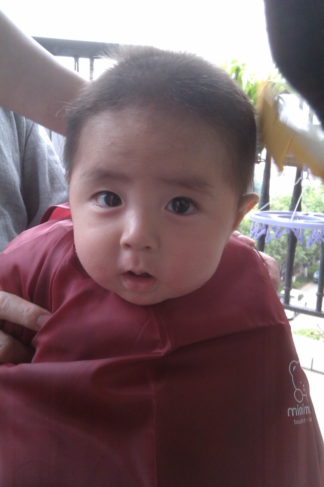
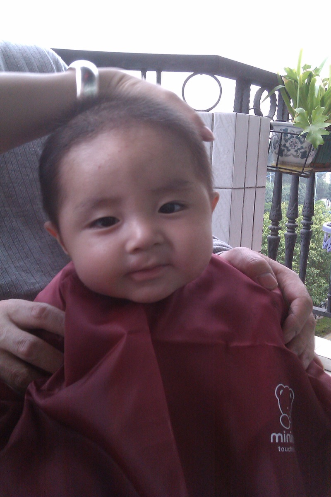

第二章 身上
2010年11月5日
他第一次游泳。
今天我第一次游泳，爸妈把木桶放了半桶温水。我套上专用游泳圈，玩了10多分钟，可好玩了。
今注：木桶是家里的，泳圈是专用的。这一年冬天，他在木桶里游过好几回。

2010年11月8日
阿姨回乡下，外婆和母亲在家。
今天阿姨回乡下看看，外婆和妈妈在家照顾我。我的脸上和肩膀上都有了一些红豆，比较粗糙，妈妈说应该是皮肤过敏和奶粉热气，他们都很急，还给我涂了些药，比昨天好些了。爸爸开始在新单位上班了，他的情绪也慢慢好起来了。
今注：红豆消了又起，一直断断续续到第二年。
2010年11月17日
那天晚上他哭得很凶。
今天妈妈还是郁闷，没有理由，也许是产后忧郁症，没有自己的时空，把一切献给了我这个宝贝，新的生活，新的烦恼，一时无法摆脱，不适应加劳累，妈妈心苦。奶奶一天把我当个宝贝疙瘩，舍不得放手，而且口不对心，说不抱，其实她抱得最多，倒是爷爷比较淡定。今晚我哭得凶，时间也长，估计是肚子不舒服，一是2天没大便了，二是妈妈用米汤冲奶粉，我不太适应。希望明天会好些。
今注：日记里第一次写下"产后忧郁症"五个字，用的是"也许"。
2011年1月1日
新年第一天，他快五个月。
今天是新年第一天，我快5个月了，新的一年新的开始，我现在特别爱说话，上午躺在床上和妈妈说，起来后和爷爷奶奶说，朱姨抱时和她说，爸爸带我上街，我在车里说，晚上睡觉前还会说一说，当然，我说得都是单音，一般表达一下我对他们的善意，多数时候用"哦，啊，咯，呵，哈，呀"，而且不连贯，不过有时尾音会长些。
今注：这一天他说了五场话，对象是母亲、爷爷奶奶、朱姨、父亲，还有车里。


2011年3月6日
今天我理发了之二。
今注：之一没有留下文字，只有照片。



2011年3月30日
他感冒，咳嗽，坐公交。
这几天好像有些感冒，一大早起来就会时不时咳嗽一下，不过我还是很精神，睡觉还是不错，吐奶的现象好像好点了。每天睡觉时间也比较准时，爸爸这几天都很忙，不是忙着吃饭就是党校活动多，我已经2次陪妈妈坐公交车回来了，好在车上有电视看，我可喜欢看了，所以我也比较安静没有给妈妈找麻烦。我也爱睡觉，一旦睡着了，除了爸爸喂奶我会稍微醒醒外，都是到头就睡，而且爸爸喂我的时候，我也边睡边吃很是享受的样子，不过我的睡姿就多了，一会反过来一会儿翻过去，好像在煎饼一样。
今注：煎饼这个比喻，是他父亲在这本书里少有的玩笑。